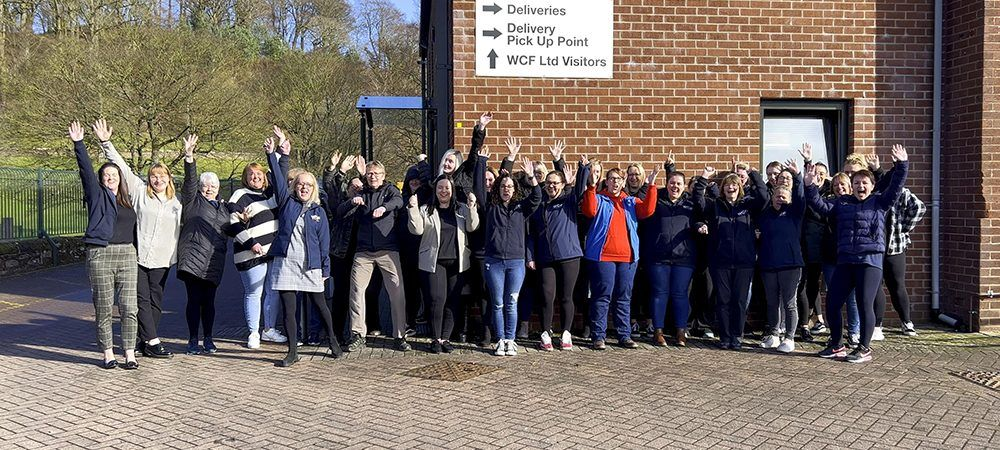
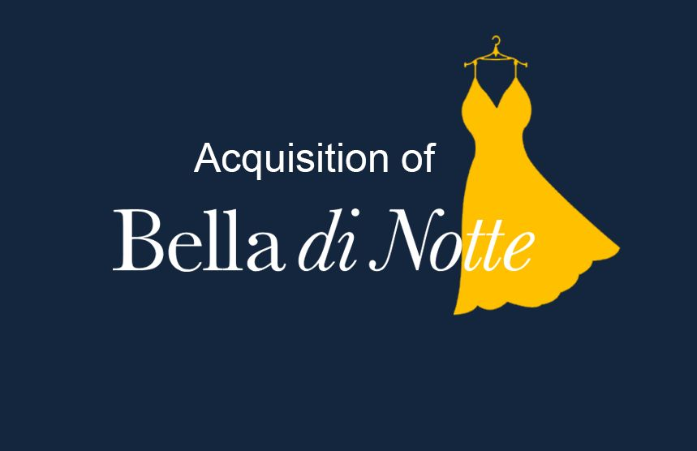

How we use our employee ownership model to drive success
SWITCHING to an employee-owned model can make businesses more profitable, competitive and sustainable whilst sharing the benefits of success with the people who helped to make it happen.
That’s the message from the managing director of a leading UK part employee-owned company after research revealed that the number of businesses in which employees had a stake had grown by 37% in the past 12 months.

Jo Ritzema, who is managing director of WCF, which operates in the leisure, retail and logistics sectors, said an employee-owned business model allowed firms to focus on long-term success rather than short-term profitability, build resilience and encouraged a loyal, engaged workforce with shared responsibility and a strong sense of corporate social responsibility.
Jo, who leads a team of more than 350 people at WCF, said: “Being an employee-owned business drives productivity and innovation because the team is invested emotionally and financially in the long-term success of the company. At WCF, it has enabled us to grow the business steadily and organically without the pressure to take risks which would benefit stakeholders only in the short-term. We are able to make decisions which put the interests of our employee owners first, with the ultimate aim of handing over the business to the next generation in a stronger financial position than when we inherited it, so future employees owners can benefit from its continued existence. By not having to worry about the business being sold, we can ensure that the WCF legacy, history and culture is passed on.”
Employee ownership is where all employees have a ‘significant and meaningful’ stake in a business. Employee owners generally have both a financial stake in the business, for example, by owning shares or receiving some element of profit share, and a meaningful say in how it’s run.
WCF offers a range of benefits to its employee owners and shares financial success across the business via an annual Employee Ownership Dividend payment and the issue of free shares if targets are reached. Employee owners are also encouraged and helped to own WCF shares directly through the provision of interest free loans.
WCF is a diverse and dynamic company, based in more than 30 locations across the UK in industries including home shopping, oil distribution, pet and equestrian retail stores, camping and glamping sites, and e-commerce. It was established in 1911. Jo credits the company’s long-term resilience to its part employee-owned structure, which promotes autonomy and responsibility at every level at every level alongside a diversity of income streams.
“Being employee-owned empowers the team with a real sense of purpose and collective responsibility for the future of WCF,” she said. “We devolve a huge amount of autonomy and trust to our team, with the general managers in each division running the business as if it were their own. We operate a diverse range of businesses across multiple sites at WCF, from working on the shopfloor in retail to managing campsites, and our shared values and culture ensure that whatever our role in the company, we are all working towards a common goal. Listening to our employee voice, responding meaningfully and being influenced by team responses is absolutely vital to our business, and we are continually looking for ways we can build on how we communicate and do it better. Because everyone employees knows their voice is important, we find that they have real long-term investment in both their own roles and the wider business, which is great for retention. It also promotes curiosity because the team is always looking for new ways to drive the business forward.
“By taking the lead from our team, it naturally fosters a strong sense of corporate responsibility through supporting organisations in our local communities and charities which are important to them at a personal level.”
Jo was on the board of the Employee Ownership Association (EOA) as a non-executive director for 10 years. The EOA champions, supports and provides insight for more than 700 members across the UK. Its most recent research into UK employee-owned businesses was created in collaboration with the White Rose Centre for Employee Ownership.
Press Links
- How an employee-owned business model drives success
- Employee-owned businesses can 'drive success' claims WCF
- How an employee-owned business model drives success
- Jo Ritzema on leading WCF: Empowering Employee Ownership and Driving Innovation
- How an employee-owned business model drives success
- Why being employee-owned could benefit your business
< Previous Article
Acquisition of Bella di Notte
